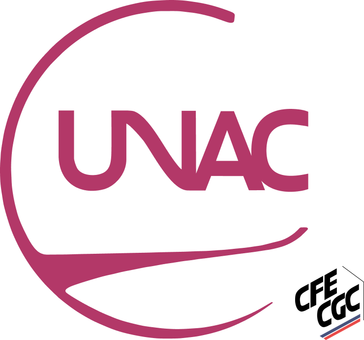

Document interne · délégués
Guide pratique
S’approprier
la charte graphique
UNAC
Couleurs, typographies, logos, mise en page, impression : les repères pour que chaque support de la section soit immédiatement reconnaissable.

Document évolutif, mis à jour au fil
des consignes de la communication de la section.
Version 1
20 novembre 2026
L’essentiel en une page
Dix réflexes qui suffisent dans 90 % des cas. Le détail suit dans les pages suivantes.
1. Un seul rose
Le rose UNAC #B33866 porte l’identité : logo, titres, bandeaux, mots clés. Les autres roses ne font que l’accompagner.
2. Fond gris clair
Les supports se posent sur un fond #EBEBEB, plutôt que sur du blanc pur.
3. Police UNAC pour tout le texte
UNAC Regular pour le texte, UNAC Bold pour mettre en valeur. Aucune autre police dans le corps du texte.
4. Novotype avec parcimonie
Réservée aux titres de section et à la signature. Jamais dans les paragraphes, les listes ni les encadrés.
5. Le mot UNAC ressort
Dans un titre en Novotype, « UNAC » et les mots clés passent en Medium ; le reste en Regular.
6. Le logo ne se modifie pas
Rose sur fond clair, blanc sur fond rose ou sombre. Ni déformation, ni ombre, ni contour.
7. La sobriété avant tout
Pas d’étiquette au-dessus des titres, pas de grilles de petites cartes : une mise en page simple et aérée.
8. L’information clé dans un pavé rose
Ce qu’il faut retenir ou faire va dans un pavé rose foncé, texte et puces en blanc.
9. Une typographie française soignée
Pas de ponctuation ni de mot seul en fin de ligne, espaces insécables avant : ; ! ?.
10. Toujours finir par l’appli
Chaque support se termine par le bloc « Un doute, une question ? Tchat appli UNAC · 24h/24, 7j/7 ».
Comment lire ce guide
Charte règle de la charte ou consigne de la communication de la section · Recommandation bonne pratique retenue dans l’Atelier, à suivre faute de consigne contraire · À arbitrer point encore ouvert, à trancher avec la communication de la section.
S’approprier la charte graphique UNAC2
1Les couleurs
La palette est courte et volontairement monochrome : du rose, ses nuances sombres, du gris et du blanc.
Rose UNAC CharteHEX #B33866 · RVB 179 56 102
Logo, titres, bandeaux, mots clés.
FramboiseHEX #7A2A4E · RVB 122 42 78
Dégradés, encadrés foncés.
PruneHEX #4F1530 · RVB 79 21 48
Fonds sombres, bas de dégradé.
Rose clairHEX #F7EBF0 · RVB 247 235 240
Encadrés clairs, fonds de section.
Gris clair CharteHEX #EBEBEB · RVB 235 235 235
Fond des supports et des visuels.
TexteHEX #2B2B30 · RVB 43 43 48
Corps du texte (jamais de noir pur).
Le dégradé « pavé magenta » Recommandation
De #A3285C (haut) à #C2306E (bas). Pour les pavés d’information clé (dates, consignes), texte et puces en blanc.
Proportions conseillées Recommandation
Environ 55 % gris clair, 20 % blanc, 15 % rose, 7 % texte, 3 % nuances sombres. Le rose est un accent, pas un fond général.
Couleurs des sections Recommandation
Pour les supports d’une section hors Air France, la couleur de la compagnie remplace le rose dans les accents (titres, bandeaux). Le logo UNAC de la section reste celui fourni dans la charte.
HOP! · #E4002B
Transavia · #0ACF78
Volotea · #E4183F
easyJet · #FF6600
La Compagnie · #2F86D1
Aircalin · #0D4A9B
Pour l’imprimeur À arbitrer
Les références CMJN et Pantone officielles ne sont pas encore renseignées. En attendant, envoyer un PDF en RVB : l’imprimeur fait la conversion.
S’approprier la charte graphique UNAC3
2Les typographies
Deux familles, deux rôles : UNAC pour lire, Novotype pour signer les titres.
UNACCharte
Regular et Bold
Aa Bb Cc Éé Àà 0123456789 « ? ! »
Pour : tout le texte courant, les intertitres, les listes, les encadrés, les chiffres, les coordonnées.
Mise en valeur : le Bold, sur quelques mots. Ni italique, ni soulignement.
NovotypeCharte
Pour : les titres de section et le nom dans la signature, uniquement.
À savoir : la Novotype n’a que des capitales : un titre en Novotype est toujours en capitales.
Le bon dosage de Novotype Consigne de la section
Titre en Novotype Regular ; « UNAC » et les mots clés en Novotype Medium, éventuellement en rose.
- Pas de Novotype dans les paragraphes, les listes, les pavés ou les tuiles de dates (« trop de Novotype »).
- Pas de titre entièrement en Medium : c’est le contraste qui fait ressortir le mot clé.
- Pas de Novotype sous 12 pt.
Hiérarchie type d’un support A4 Recommandation
| Élément | Police | Taille | Couleur |
|---|
| Titre du document | UNAC Regular + Bold (« Infos RETRAITE ») | 34–40 pt | Rose UNAC |
| Titre de section | Novotype Regular, mots clés en Medium | 16–20 pt | Texte + rose pour le mot clé |
| Intertitre | UNAC Bold | 12–14 pt | Rose UNAC |
| Texte courant | UNAC Regular, interligne 1,4 à 1,5 | 11–12 pt | Texte #2B2B30 |
| Notes, mentions | UNAC Regular | 8,5–10 pt | Texte ou gris |
| Signature | Nom en Novotype Medium, fonction en UNAC Regular (droit, sans italique)
Votre experte retraite | 14 / 11 pt | Rose / texte |
Fichiers de police non diffusés sur le site (licences) : les demander à la communication de la section.
S’approprier la charte graphique UNAC4
3Le logo
Les fichiers officiels se téléchargent dans Charte graphique de l’Atelier UNAC (PNG ou JPG, toutes tailles, avec ou sans fond).
Rose sur blancRose sur gris clairBlanc sur roseBlanc sur prune
À faire Charte
- Utiliser uniquement les fichiers de la charte, jamais un logo recopié ou redessiné.
- Version rose sur fond clair, version blanche sur fond rose ou sombre.
- Garder les proportions : agrandir ou réduire en tirant par un coin.
- Laisser de l’air autour du logo Recommandation : au moins la hauteur du « U » de UNAC de chaque côté.
- Taille minimale Recommandation : 20 mm de large à l’impression, 120 px à l’écran.
À éviter
- Déformer, étirer, pencher ou recadrer le logo.
- Changer sa couleur hors des versions prévues (rose, blanc, noir, prune).
- Ajouter une ombre, un contour, un dégradé ou un effet.
- Le poser sur une photo chargée ou un fond qui le rend peu lisible.
- Le mettre en couleur sur fond rose (rose sur rose).
Logos de section
Chaque section (HOP!, Transavia, Volotea, easyJet, La Compagnie, Aircalin) a son logo UNAC de section, ainsi que l’avion et la dérive aux couleurs de la compagnie. Ils se téléchargent au même endroit et suivent les mêmes règles.
Logos des compagnies
Les logos Air France, HOP!, Transavia, etc. appartiennent aux compagnies : les utiliser seulement pour désigner la section concernée, sans les modifier ni les associer à un message qui pourrait laisser croire à une communication de la compagnie.
S’approprier la charte graphique UNAC5
4La mise en page
Une page UNAC se reconnaît à son calme : un fond gris clair, des titres nets, un seul pavé fort, de l’espace.
Texte courant en UNAC Regular, justifié ou aligné à gauche, avec des paragraphes courts.
L’information clé- Texte et puces en blanc
- Un seul pavé fort par page
Bon à savoir — l’encadré rose clair pour une précision secondaire.
Un doute, une question ? Tchat appli UNAC · 24h/24, 7j/7
Les éléments de base
- Fond gris clair
#EBEBEB Consigne
- Titre de section en Novotype, souligné d’un filet rose.
- Pavé rose foncé (dégradé magenta) pour l’information clé, en pleine largeur, texte et puces en blanc Consigne
- Encadré rose clair pour une précision secondaire.
- Photos des délégués détourées, posées sur le bandeau du bas.
- Bloc final appli UNAC sur chaque support.
Oui
- Une idée par bloc, des phrases courtes.
- De l’espace : la page doit respirer, sans grand vide en bas de page non plus.
- Des dates et des chiffres mis en valeur (tuiles, gras).
- Un appel à l’action clair : qui contacter, comment s’inscrire.
Non
- Les étiquettes ou sur-titres au-dessus des titres Consigne
- Les grilles de petites cartes ou de pictos alignés (effet « fait par une IA ») Consigne
- Les ombres, effets 3D, contours et dégradés multicolores Recommandation
- Plus de deux couleurs d’accent sur une même page Recommandation
Illustrations
Les pictos suivent l’ADN de l’application UNAC : isométrie, aplats sans contour, rose + gris + touches d’or, personnages arrondis (pas d’effet « cubes »), un objet principal et un accessoire qui porte le sens. Les visuels de l’appli sont réservés aux supports internes de la section.
S’approprier la charte graphique UNAC6
5Écrire, imprimer, publier
Typographie française Recommandation
- Espace insécable avant
: ; ! ? et à l’intérieur des guillemets « … ».
- Jamais de ponctuation ni de mot seul sur la dernière ligne d’un paragraphe.
- Les dates et les nombres ne se coupent pas : « 30 novembre », « 10 h », « 2 ans ».
- Majuscules accentuées : « À CDG », « ÉTAPES ».
- Apostrophe typographique ’ plutôt que '.
- Mois en minuscules (« janvier 2027 »), « 1er » ou « premier » en toutes lettres dans un titre en capitales.
Les outils de l’Atelier appliquent automatiquement la plupart de ces règles.
Ton et contenu
- Vouvoiement, ton direct et bienveillant.
- Toujours une source ou une référence pour un chiffre ou un droit.
- Sûreté : pas de nom d’hôtel dans un support public (version adhérents uniquement).
- Coordonnées officielles : navigants@unac.asso.fr, appli UNAC.
Formats et diffusion Recommandation
| Usage | Format | Fichier à envoyer |
|---|
| Impression Meljet, imprimeur | A4, 210 × 297 mm | PDF vectoriel (« Imprimer en PDF » depuis l’Atelier), polices incluses, sans ombres portées |
| Envoi par e-mail | A4 | PDF ; image JPEG haute définition si le destinataire ne lit pas les PDF |
| Instagram, Facebook (post) | 1080 × 1080 ou 1080 × 1350 px | PNG ou JPG (outil Chrono’) |
| Story | 1080 × 1920 px | PNG ou JPG (outil Chrono’) |
| Image haute définition | 2480 px de large (A4 à 300 dpi) | PNG, option « HD » des exports d’images |
Avant d’envoyer : la check-list
- Les couleurs et les polices sont celles de la charte, sans effet ajouté.
- Le logo est un fichier officiel, bien lisible, non déformé.
- La Novotype n’est utilisée que dans les titres de section et la signature.
- Aucun mot ni signe de ponctuation n’est isolé en fin de ligne.
- Le support se termine par le bloc appli UNAC et les bonnes coordonnées.
- Relu par un second délégué ; validé par la communication de la section pour une diffusion large.
S’approprier la charte graphique UNAC7
6Journal des consignes
Chaque nouvelle consigne de la communication de la section est ajoutée ici, datée. C’est la page à consulter en premier à chaque nouvelle version.
| Date | Consigne | Source |
|---|
| Nov. 2026 | La charte UNAC s’impose à toutes les publications de la section, posts Instagram et Facebook compris. | Communication de la section |
| Nov. 2026 | Mises en page sobres : pas d’étiquettes au-dessus des titres, pas de grilles de petites cartes. | Communication de la section |
| Nov. 2026 | Les illustrations reprennent l’ADN des pictos de l’appli UNAC ; personnages arrondis, sans effet « cubes ». | Section |
| Nov. 2026 | Les supports se terminent par le bloc appli UNAC (« Un doute, une question ? »). | Section |
| 19/11/2026 | Encadré d’information en rose foncé, texte et puces en blanc. | Communication de la section |
| 19/11/2026 | Fond de page gris clair #EBEBEB. | Communication de la section |
| 19/11/2026 | Titres de section en Novotype : « UNAC » et mots clés en Medium, le reste en Regular. | Section |
| 19/11/2026 | « Trop de Novotype » : Novotype réservée aux titres de section (et au nom de la signature), jamais dans les pavés, listes et textes. | Communication de la section |
| 19/11/2026 | Signature : nom en Novotype Medium, fonction en dessous, en romain (pas d’italique). | Section |
| 19/11/2026 | Typographie : jamais de point d’exclamation ou de mot seul en fin de ligne. | Section |
| 19/11/2026 | Impression Meljet : PDF vectoriel, sans ombres portées. | Section |
| | |
| | |
Points à arbitrer À arbitrer
- Nuances de rose : on trouve
#B33866 (charte), #B33868 (newsletter) et #C24477 (pictos de l’appli). Proposition : #B33866 partout pour le texte et les aplats.
- « Prune » : le nom désigne
#4F1530 dans la charte et #A54067 dans les thèmes de Chrono’. À renommer pour éviter la confusion.
- Impression : obtenir les références CMJN et Pantone officielles.
- Logo : confirmer la zone de protection et la taille minimale proposées.
S’approprier la charte graphique UNAC · Version 1 · 20 novembre 20268